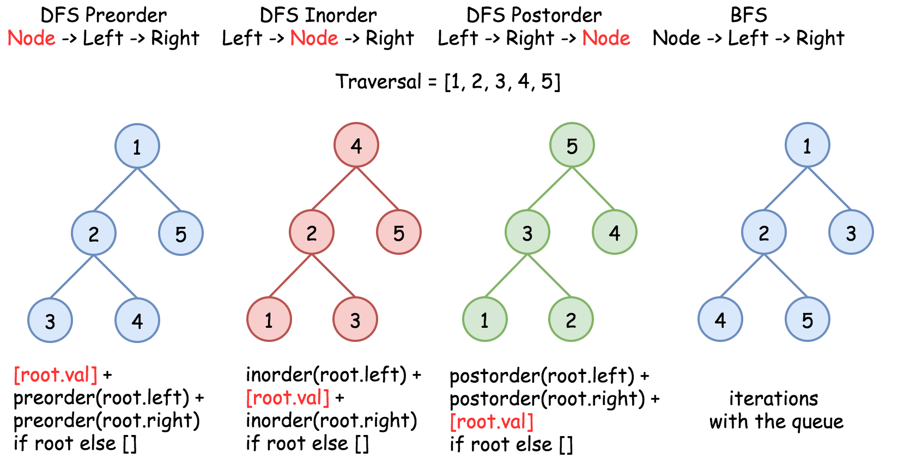
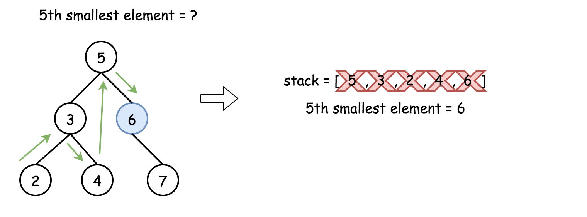

<div data-key="solution-content" data-cy="solution-content" class="tab-pane__ncJk css-1eusa4c-TabContent e5i1odf5"><div id="solution" class="solution__1uRe"><div class="nav__1n5p"><a class="ant-dropdown-link ant-dropdown-trigger"><div>Quick Navigation</div></a></div><div class="contentwrapper__2jML"><div class="rating-container__17_x"><div class="cont__FQzg"><div class="container__19j8"><div class="background-stars__QHjZ"><button class="btn__h1WO"><div><svg viewBox="0 0 24 24" width="1em" height="1em" class="icon__1Md2 star-icon__1M5E"><path fill-rule="evenodd" d="M12 17.27L18.18 21l-1.64-7.03L22 9.24l-7.19-.61L12 2 9.19 8.63 2 9.24l5.46 4.73L5.82 21z"></path></svg></div></button><button class="btn__h1WO"><div><svg viewBox="0 0 24 24" width="1em" height="1em" class="icon__1Md2 star-icon__1M5E"><path fill-rule="evenodd" d="M12 17.27L18.18 21l-1.64-7.03L22 9.24l-7.19-.61L12 2 9.19 8.63 2 9.24l5.46 4.73L5.82 21z"></path></svg></div></button><button class="btn__h1WO"><div><svg viewBox="0 0 24 24" width="1em" height="1em" class="icon__1Md2 star-icon__1M5E"><path fill-rule="evenodd" d="M12 17.27L18.18 21l-1.64-7.03L22 9.24l-7.19-.61L12 2 9.19 8.63 2 9.24l5.46 4.73L5.82 21z"></path></svg></div></button><button class="btn__h1WO"><div><svg viewBox="0 0 24 24" width="1em" height="1em" class="icon__1Md2 star-icon__1M5E"><path fill-rule="evenodd" d="M12 17.27L18.18 21l-1.64-7.03L22 9.24l-7.19-.61L12 2 9.19 8.63 2 9.24l5.46 4.73L5.82 21z"></path></svg></div></button><button class="btn__h1WO"><div><svg viewBox="0 0 24 24" width="1em" height="1em" class="icon__1Md2 star-icon__1M5E"><path fill-rule="evenodd" d="M12 17.27L18.18 21l-1.64-7.03L22 9.24l-7.19-.61L12 2 9.19 8.63 2 9.24l5.46 4.73L5.82 21z"></path></svg></div></button></div><div class="foreground-stars__2P8U" style="width: 91.12%;"><div class="btn__h1WO"><svg viewBox="0 0 24 24" width="1em" height="1em" class="icon__1Md2 star-icon__1M5E"><path fill-rule="evenodd" d="M12 17.27L18.18 21l-1.64-7.03L22 9.24l-7.19-.61L12 2 9.19 8.63 2 9.24l5.46 4.73L5.82 21z"></path></svg></div><div class="btn__h1WO"><svg viewBox="0 0 24 24" width="1em" height="1em" class="icon__1Md2 star-icon__1M5E"><path fill-rule="evenodd" d="M12 17.27L18.18 21l-1.64-7.03L22 9.24l-7.19-.61L12 2 9.19 8.63 2 9.24l5.46 4.73L5.82 21z"></path></svg></div><div class="btn__h1WO"><svg viewBox="0 0 24 24" width="1em" height="1em" class="icon__1Md2 star-icon__1M5E"><path fill-rule="evenodd" d="M12 17.27L18.18 21l-1.64-7.03L22 9.24l-7.19-.61L12 2 9.19 8.63 2 9.24l5.46 4.73L5.82 21z"></path></svg></div><div class="btn__h1WO"><svg viewBox="0 0 24 24" width="1em" height="1em" class="icon__1Md2 star-icon__1M5E"><path fill-rule="evenodd" d="M12 17.27L18.18 21l-1.64-7.03L22 9.24l-7.19-.61L12 2 9.19 8.63 2 9.24l5.46 4.73L5.82 21z"></path></svg></div><div class="btn__h1WO"><svg viewBox="0 0 24 24" width="1em" height="1em" class="icon__1Md2 star-icon__1M5E"><path fill-rule="evenodd" d="M12 17.27L18.18 21l-1.64-7.03L22 9.24l-7.19-.61L12 2 9.19 8.63 2 9.24l5.46 4.73L5.82 21z"></path></svg></div></div></div><p class="desc__3NDJ">Average Rating: 4.56 (187 votes)</p></div></div><div class="content__QRGW"><div><h2>Solution</h2>
<hr>
<h4 id="how-to-traverse-the-tree">How to traverse the tree</h4>
<p>There are two general strategies to traverse a tree:</p>
<ul>
<li>
<p><em>Depth First Search</em> (<code>DFS</code>)</p>
<p>In this strategy, we adopt the <code>depth</code> as the priority, so that one
would start from a root and reach all the way down to certain leaf,
and then back to root to reach another branch.</p>
<p>The DFS strategy can further be distinguished as
<code>preorder</code>, <code>inorder</code>, and <code>postorder</code> depending on the relative order
among the root node, left node and right node.</p>
</li>
<li>
<p><em>Breadth First Search</em> (<code>BFS</code>)</p>
<p>We scan through the tree level by level, following the order of height,
from top to bottom. The nodes on higher level would be visited before
the ones with lower levels.</p>
</li>
</ul>
<p>On the following figure the nodes are numerated in the order you visit them,
please follow <code>1-2-3-4-5</code> to compare different strategies.</p>
<p></p>
<blockquote>
<p>To solve the problem, one could use the property of BST : inorder traversal of BST
is an array sorted in the ascending order.</p>
</blockquote>
<br> 
<br>
<hr>
<h4 id="approach-1-recursive-inorder-traversal">Approach 1: Recursive Inorder Traversal</h4>
<p>It's a very straightforward approach with <span class="katex"><span class="katex-mathml"><math><semantics><mrow><mi mathvariant="script">O</mi><mo>(</mo><mi>N</mi><mo>)</mo></mrow><annotation encoding="application/x-tex">\mathcal{O}(N)</annotation></semantics></math></span><span class="katex-html" aria-hidden="true"><span class="base"><span class="strut" style="height:1em;vertical-align:-0.25em;"></span><span class="mord"><span class="mord mathcal" style="margin-right:0.02778em;">O</span></span><span class="mopen">(</span><span class="mord mathdefault" style="margin-right:0.10903em;">N</span><span class="mclose">)</span></span></span></span>
time complexity.
The idea is to build an inorder traversal of BST which is
an array sorted in the ascending order.
Now the answer is the <code>k - 1</code>th element of this array.</p>
<p></p>
<iframe src="https://leetcode.com/playground/3HqKP9gQ/shared" frameborder="0" width="100%" height="293" name="3HqKP9gQ"></iframe>
<p><strong>Complexity Analysis</strong></p>
<ul>
<li>Time complexity : <span class="katex"><span class="katex-mathml"><math><semantics><mrow><mi mathvariant="script">O</mi><mo>(</mo><mi>N</mi><mo>)</mo></mrow><annotation encoding="application/x-tex">\mathcal{O}(N)</annotation></semantics></math></span><span class="katex-html" aria-hidden="true"><span class="base"><span class="strut" style="height:1em;vertical-align:-0.25em;"></span><span class="mord"><span class="mord mathcal" style="margin-right:0.02778em;">O</span></span><span class="mopen">(</span><span class="mord mathdefault" style="margin-right:0.10903em;">N</span><span class="mclose">)</span></span></span></span> to build a traversal.</li>
<li>Space complexity : <span class="katex"><span class="katex-mathml"><math><semantics><mrow><mi mathvariant="script">O</mi><mo>(</mo><mi>N</mi><mo>)</mo></mrow><annotation encoding="application/x-tex">\mathcal{O}(N)</annotation></semantics></math></span><span class="katex-html" aria-hidden="true"><span class="base"><span class="strut" style="height:1em;vertical-align:-0.25em;"></span><span class="mord"><span class="mord mathcal" style="margin-right:0.02778em;">O</span></span><span class="mopen">(</span><span class="mord mathdefault" style="margin-right:0.10903em;">N</span><span class="mclose">)</span></span></span></span> to keep an inorder traversal.
<br>
<br></li>
</ul>
<hr>
<h4 id="approach-2-iterative-inorder-traversal">Approach 2: Iterative Inorder Traversal</h4>
<p>The above recursion could be converted into iteration,
with the help of stack. This way one could speed up the solution
because there is no need to build the entire inorder traversal,
and one could stop after the kth element.</p>
<p></p>
<iframe src="https://leetcode.com/playground/BThpnsFo/shared" frameborder="0" width="100%" height="361" name="BThpnsFo"></iframe>
<p><strong>Complexity Analysis</strong></p>
<ul>
<li>Time complexity: <span class="katex"><span class="katex-mathml"><math><semantics><mrow><mi mathvariant="script">O</mi><mo>(</mo><mi>H</mi><mo>+</mo><mi>k</mi><mo>)</mo></mrow><annotation encoding="application/x-tex">\mathcal{O}(H + k)</annotation></semantics></math></span><span class="katex-html" aria-hidden="true"><span class="base"><span class="strut" style="height:1em;vertical-align:-0.25em;"></span><span class="mord"><span class="mord mathcal" style="margin-right:0.02778em;">O</span></span><span class="mopen">(</span><span class="mord mathdefault" style="margin-right:0.08125em;">H</span><span class="mspace" style="margin-right:0.2222222222222222em;"></span><span class="mbin">+</span><span class="mspace" style="margin-right:0.2222222222222222em;"></span></span><span class="base"><span class="strut" style="height:1em;vertical-align:-0.25em;"></span><span class="mord mathdefault" style="margin-right:0.03148em;">k</span><span class="mclose">)</span></span></span></span>, where <span class="katex"><span class="katex-mathml"><math><semantics><mrow><mi>H</mi></mrow><annotation encoding="application/x-tex">H</annotation></semantics></math></span><span class="katex-html" aria-hidden="true"><span class="base"><span class="strut" style="height:0.68333em;vertical-align:0em;"></span><span class="mord mathdefault" style="margin-right:0.08125em;">H</span></span></span></span> is a tree height.
This complexity is defined by the stack, which contains at least <span class="katex"><span class="katex-mathml"><math><semantics><mrow><mi>H</mi><mo>+</mo><mi>k</mi></mrow><annotation encoding="application/x-tex">H + k</annotation></semantics></math></span><span class="katex-html" aria-hidden="true"><span class="base"><span class="strut" style="height:0.76666em;vertical-align:-0.08333em;"></span><span class="mord mathdefault" style="margin-right:0.08125em;">H</span><span class="mspace" style="margin-right:0.2222222222222222em;"></span><span class="mbin">+</span><span class="mspace" style="margin-right:0.2222222222222222em;"></span></span><span class="base"><span class="strut" style="height:0.69444em;vertical-align:0em;"></span><span class="mord mathdefault" style="margin-right:0.03148em;">k</span></span></span></span> elements, since before
starting to pop out one has to go down to a leaf. This results in
<span class="katex"><span class="katex-mathml"><math><semantics><mrow><mi mathvariant="script">O</mi><mo>(</mo><mi>log</mi><mo>⁡</mo><mi>N</mi><mo>+</mo><mi>k</mi><mo>)</mo></mrow><annotation encoding="application/x-tex">\mathcal{O}(\log N + k)</annotation></semantics></math></span><span class="katex-html" aria-hidden="true"><span class="base"><span class="strut" style="height:1em;vertical-align:-0.25em;"></span><span class="mord"><span class="mord mathcal" style="margin-right:0.02778em;">O</span></span><span class="mopen">(</span><span class="mop">lo<span style="margin-right:0.01389em;">g</span></span><span class="mspace" style="margin-right:0.16666666666666666em;"></span><span class="mord mathdefault" style="margin-right:0.10903em;">N</span><span class="mspace" style="margin-right:0.2222222222222222em;"></span><span class="mbin">+</span><span class="mspace" style="margin-right:0.2222222222222222em;"></span></span><span class="base"><span class="strut" style="height:1em;vertical-align:-0.25em;"></span><span class="mord mathdefault" style="margin-right:0.03148em;">k</span><span class="mclose">)</span></span></span></span> for the balanced tree and
<span class="katex"><span class="katex-mathml"><math><semantics><mrow><mi mathvariant="script">O</mi><mo>(</mo><mi>N</mi><mo>+</mo><mi>k</mi><mo>)</mo></mrow><annotation encoding="application/x-tex">\mathcal{O}(N + k)</annotation></semantics></math></span><span class="katex-html" aria-hidden="true"><span class="base"><span class="strut" style="height:1em;vertical-align:-0.25em;"></span><span class="mord"><span class="mord mathcal" style="margin-right:0.02778em;">O</span></span><span class="mopen">(</span><span class="mord mathdefault" style="margin-right:0.10903em;">N</span><span class="mspace" style="margin-right:0.2222222222222222em;"></span><span class="mbin">+</span><span class="mspace" style="margin-right:0.2222222222222222em;"></span></span><span class="base"><span class="strut" style="height:1em;vertical-align:-0.25em;"></span><span class="mord mathdefault" style="margin-right:0.03148em;">k</span><span class="mclose">)</span></span></span></span> for completely unbalanced tree with all
the nodes in the left subtree.</li>
<li>Space complexity: <span class="katex"><span class="katex-mathml"><math><semantics><mrow><mi mathvariant="script">O</mi><mo>(</mo><mi>H</mi><mo>)</mo></mrow><annotation encoding="application/x-tex">\mathcal{O}(H)</annotation></semantics></math></span><span class="katex-html" aria-hidden="true"><span class="base"><span class="strut" style="height:1em;vertical-align:-0.25em;"></span><span class="mord"><span class="mord mathcal" style="margin-right:0.02778em;">O</span></span><span class="mopen">(</span><span class="mord mathdefault" style="margin-right:0.08125em;">H</span><span class="mclose">)</span></span></span></span> to keep the stack,
where <span class="katex"><span class="katex-mathml"><math><semantics><mrow><mi>H</mi></mrow><annotation encoding="application/x-tex">H</annotation></semantics></math></span><span class="katex-html" aria-hidden="true"><span class="base"><span class="strut" style="height:0.68333em;vertical-align:0em;"></span><span class="mord mathdefault" style="margin-right:0.08125em;">H</span></span></span></span> is a tree height. That makes
<span class="katex"><span class="katex-mathml"><math><semantics><mrow><mi mathvariant="script">O</mi><mo>(</mo><mi>N</mi><mo>)</mo></mrow><annotation encoding="application/x-tex">\mathcal{O}(N)</annotation></semantics></math></span><span class="katex-html" aria-hidden="true"><span class="base"><span class="strut" style="height:1em;vertical-align:-0.25em;"></span><span class="mord"><span class="mord mathcal" style="margin-right:0.02778em;">O</span></span><span class="mopen">(</span><span class="mord mathdefault" style="margin-right:0.10903em;">N</span><span class="mclose">)</span></span></span></span> in the worst case of the skewed tree,
and <span class="katex"><span class="katex-mathml"><math><semantics><mrow><mi mathvariant="script">O</mi><mo>(</mo><mi>log</mi><mo>⁡</mo><mi>N</mi><mo>)</mo></mrow><annotation encoding="application/x-tex">\mathcal{O}(\log N)</annotation></semantics></math></span><span class="katex-html" aria-hidden="true"><span class="base"><span class="strut" style="height:1em;vertical-align:-0.25em;"></span><span class="mord"><span class="mord mathcal" style="margin-right:0.02778em;">O</span></span><span class="mopen">(</span><span class="mop">lo<span style="margin-right:0.01389em;">g</span></span><span class="mspace" style="margin-right:0.16666666666666666em;"></span><span class="mord mathdefault" style="margin-right:0.10903em;">N</span><span class="mclose">)</span></span></span></span> in the average case of the balanced tree.
<br>
<br></li>
</ul>
<hr>
<h4 id="follow-up">Follow up</h4>
<blockquote>
<p>What if the BST is modified (insert/delete operations)
often and you need to find the kth smallest frequently?
How would you optimize the kthSmallest routine?</p>
</blockquote>
<p><a href="https://leetcode.com/articles/insert-into-a-bst/">Insert</a>
and <a href="https://leetcode.com/articles/delete-node-in-a-bst/">delete</a>
in a BST were discussed last week, the time complexity of these
operations is <span class="katex"><span class="katex-mathml"><math><semantics><mrow><mi mathvariant="script">O</mi><mo>(</mo><mi>H</mi><mo>)</mo></mrow><annotation encoding="application/x-tex">\mathcal{O}(H)</annotation></semantics></math></span><span class="katex-html" aria-hidden="true"><span class="base"><span class="strut" style="height:1em;vertical-align:-0.25em;"></span><span class="mord"><span class="mord mathcal" style="margin-right:0.02778em;">O</span></span><span class="mopen">(</span><span class="mord mathdefault" style="margin-right:0.08125em;">H</span><span class="mclose">)</span></span></span></span>, where <span class="katex"><span class="katex-mathml"><math><semantics><mrow><mi>H</mi></mrow><annotation encoding="application/x-tex">H</annotation></semantics></math></span><span class="katex-html" aria-hidden="true"><span class="base"><span class="strut" style="height:0.68333em;vertical-align:0em;"></span><span class="mord mathdefault" style="margin-right:0.08125em;">H</span></span></span></span> is a height of binary tree,
and <span class="katex"><span class="katex-mathml"><math><semantics><mrow><mi>H</mi><mo>=</mo><mi>log</mi><mo>⁡</mo><mi>N</mi></mrow><annotation encoding="application/x-tex">H = \log N</annotation></semantics></math></span><span class="katex-html" aria-hidden="true"><span class="base"><span class="strut" style="height:0.68333em;vertical-align:0em;"></span><span class="mord mathdefault" style="margin-right:0.08125em;">H</span><span class="mspace" style="margin-right:0.2777777777777778em;"></span><span class="mrel">=</span><span class="mspace" style="margin-right:0.2777777777777778em;"></span></span><span class="base"><span class="strut" style="height:0.8888799999999999em;vertical-align:-0.19444em;"></span><span class="mop">lo<span style="margin-right:0.01389em;">g</span></span><span class="mspace" style="margin-right:0.16666666666666666em;"></span><span class="mord mathdefault" style="margin-right:0.10903em;">N</span></span></span></span> for the balanced tree.</p>
<p>Hence without any optimisation insert/delete + search of kth element has
<span class="katex"><span class="katex-mathml"><math><semantics><mrow><mi mathvariant="script">O</mi><mo>(</mo><mn>2</mn><mi>H</mi><mo>+</mo><mi>k</mi><mo>)</mo></mrow><annotation encoding="application/x-tex">\mathcal{O}(2H + k)</annotation></semantics></math></span><span class="katex-html" aria-hidden="true"><span class="base"><span class="strut" style="height:1em;vertical-align:-0.25em;"></span><span class="mord"><span class="mord mathcal" style="margin-right:0.02778em;">O</span></span><span class="mopen">(</span><span class="mord">2</span><span class="mord mathdefault" style="margin-right:0.08125em;">H</span><span class="mspace" style="margin-right:0.2222222222222222em;"></span><span class="mbin">+</span><span class="mspace" style="margin-right:0.2222222222222222em;"></span></span><span class="base"><span class="strut" style="height:1em;vertical-align:-0.25em;"></span><span class="mord mathdefault" style="margin-right:0.03148em;">k</span><span class="mclose">)</span></span></span></span> complexity.
How to optimise that?</p>
<p>That's a design question,
basically we're asked to implement a structure
which contains a BST inside and
optimises the following operations :</p>
<ul>
<li>
<p>Insert</p>
</li>
<li>
<p>Delete</p>
</li>
<li>
<p>Find kth smallest</p>
</li>
</ul>
<p>Seems like a database description, isn't it?
Let's use here the same logic as for <a href="https://leetcode.com/articles/lru-cache/">LRU cache</a>
design, and combine an indexing structure (we could keep BST here)
with a double linked list.</p>
<p>Such a structure would provide:</p>
<ul>
<li>
<p><span class="katex"><span class="katex-mathml"><math><semantics><mrow><mi mathvariant="script">O</mi><mo>(</mo><mi>H</mi><mo>)</mo></mrow><annotation encoding="application/x-tex">\mathcal{O}(H)</annotation></semantics></math></span><span class="katex-html" aria-hidden="true"><span class="base"><span class="strut" style="height:1em;vertical-align:-0.25em;"></span><span class="mord"><span class="mord mathcal" style="margin-right:0.02778em;">O</span></span><span class="mopen">(</span><span class="mord mathdefault" style="margin-right:0.08125em;">H</span><span class="mclose">)</span></span></span></span> time for the insert and delete.</p>
</li>
<li>
<p><span class="katex"><span class="katex-mathml"><math><semantics><mrow><mi mathvariant="script">O</mi><mo>(</mo><mi>k</mi><mo>)</mo></mrow><annotation encoding="application/x-tex">\mathcal{O}(k)</annotation></semantics></math></span><span class="katex-html" aria-hidden="true"><span class="base"><span class="strut" style="height:1em;vertical-align:-0.25em;"></span><span class="mord"><span class="mord mathcal" style="margin-right:0.02778em;">O</span></span><span class="mopen">(</span><span class="mord mathdefault" style="margin-right:0.03148em;">k</span><span class="mclose">)</span></span></span></span> for the search of kth smallest.</p>
</li>
</ul>
<p></p>
<p>The overall time complexity for insert/delete + search of kth smallest
is <span class="katex"><span class="katex-mathml"><math><semantics><mrow><mi mathvariant="script">O</mi><mo>(</mo><mi>H</mi><mo>+</mo><mi>k</mi><mo>)</mo></mrow><annotation encoding="application/x-tex">\mathcal{O}(H + k)</annotation></semantics></math></span><span class="katex-html" aria-hidden="true"><span class="base"><span class="strut" style="height:1em;vertical-align:-0.25em;"></span><span class="mord"><span class="mord mathcal" style="margin-right:0.02778em;">O</span></span><span class="mopen">(</span><span class="mord mathdefault" style="margin-right:0.08125em;">H</span><span class="mspace" style="margin-right:0.2222222222222222em;"></span><span class="mbin">+</span><span class="mspace" style="margin-right:0.2222222222222222em;"></span></span><span class="base"><span class="strut" style="height:1em;vertical-align:-0.25em;"></span><span class="mord mathdefault" style="margin-right:0.03148em;">k</span><span class="mclose">)</span></span></span></span> instead of <span class="katex"><span class="katex-mathml"><math><semantics><mrow><mi mathvariant="script">O</mi><mo>(</mo><mn>2</mn><mi>H</mi><mo>+</mo><mi>k</mi><mo>)</mo></mrow><annotation encoding="application/x-tex">\mathcal{O}(2H + k)</annotation></semantics></math></span><span class="katex-html" aria-hidden="true"><span class="base"><span class="strut" style="height:1em;vertical-align:-0.25em;"></span><span class="mord"><span class="mord mathcal" style="margin-right:0.02778em;">O</span></span><span class="mopen">(</span><span class="mord">2</span><span class="mord mathdefault" style="margin-right:0.08125em;">H</span><span class="mspace" style="margin-right:0.2222222222222222em;"></span><span class="mbin">+</span><span class="mspace" style="margin-right:0.2222222222222222em;"></span></span><span class="base"><span class="strut" style="height:1em;vertical-align:-0.25em;"></span><span class="mord mathdefault" style="margin-right:0.03148em;">k</span><span class="mclose">)</span></span></span></span>.</p>
<p><strong>Complexity Analysis</strong></p>
<ul>
<li>
<p>Time complexity for insert/delete + search of kth smallest:
<span class="katex"><span class="katex-mathml"><math><semantics><mrow><mi mathvariant="script">O</mi><mo>(</mo><mi>H</mi><mo>+</mo><mi>k</mi><mo>)</mo></mrow><annotation encoding="application/x-tex">\mathcal{O}(H + k)</annotation></semantics></math></span><span class="katex-html" aria-hidden="true"><span class="base"><span class="strut" style="height:1em;vertical-align:-0.25em;"></span><span class="mord"><span class="mord mathcal" style="margin-right:0.02778em;">O</span></span><span class="mopen">(</span><span class="mord mathdefault" style="margin-right:0.08125em;">H</span><span class="mspace" style="margin-right:0.2222222222222222em;"></span><span class="mbin">+</span><span class="mspace" style="margin-right:0.2222222222222222em;"></span></span><span class="base"><span class="strut" style="height:1em;vertical-align:-0.25em;"></span><span class="mord mathdefault" style="margin-right:0.03148em;">k</span><span class="mclose">)</span></span></span></span>, where <span class="katex"><span class="katex-mathml"><math><semantics><mrow><mi>H</mi></mrow><annotation encoding="application/x-tex">H</annotation></semantics></math></span><span class="katex-html" aria-hidden="true"><span class="base"><span class="strut" style="height:0.68333em;vertical-align:0em;"></span><span class="mord mathdefault" style="margin-right:0.08125em;">H</span></span></span></span> is a tree height.
<span class="katex"><span class="katex-mathml"><math><semantics><mrow><mi mathvariant="script">O</mi><mo>(</mo><mi>log</mi><mo>⁡</mo><mi>N</mi><mo>+</mo><mi>k</mi><mo>)</mo></mrow><annotation encoding="application/x-tex">\mathcal{O}(\log N + k)</annotation></semantics></math></span><span class="katex-html" aria-hidden="true"><span class="base"><span class="strut" style="height:1em;vertical-align:-0.25em;"></span><span class="mord"><span class="mord mathcal" style="margin-right:0.02778em;">O</span></span><span class="mopen">(</span><span class="mop">lo<span style="margin-right:0.01389em;">g</span></span><span class="mspace" style="margin-right:0.16666666666666666em;"></span><span class="mord mathdefault" style="margin-right:0.10903em;">N</span><span class="mspace" style="margin-right:0.2222222222222222em;"></span><span class="mbin">+</span><span class="mspace" style="margin-right:0.2222222222222222em;"></span></span><span class="base"><span class="strut" style="height:1em;vertical-align:-0.25em;"></span><span class="mord mathdefault" style="margin-right:0.03148em;">k</span><span class="mclose">)</span></span></span></span> in the average case,
<span class="katex"><span class="katex-mathml"><math><semantics><mrow><mi mathvariant="script">O</mi><mo>(</mo><mi>N</mi><mo>+</mo><mi>k</mi><mo>)</mo></mrow><annotation encoding="application/x-tex">\mathcal{O}(N + k)</annotation></semantics></math></span><span class="katex-html" aria-hidden="true"><span class="base"><span class="strut" style="height:1em;vertical-align:-0.25em;"></span><span class="mord"><span class="mord mathcal" style="margin-right:0.02778em;">O</span></span><span class="mopen">(</span><span class="mord mathdefault" style="margin-right:0.10903em;">N</span><span class="mspace" style="margin-right:0.2222222222222222em;"></span><span class="mbin">+</span><span class="mspace" style="margin-right:0.2222222222222222em;"></span></span><span class="base"><span class="strut" style="height:1em;vertical-align:-0.25em;"></span><span class="mord mathdefault" style="margin-right:0.03148em;">k</span><span class="mclose">)</span></span></span></span> in the worst case.</p>
</li>
<li>
<p>Space complexity : <span class="katex"><span class="katex-mathml"><math><semantics><mrow><mi mathvariant="script">O</mi><mo>(</mo><mi>N</mi><mo>)</mo></mrow><annotation encoding="application/x-tex">\mathcal{O}(N)</annotation></semantics></math></span><span class="katex-html" aria-hidden="true"><span class="base"><span class="strut" style="height:1em;vertical-align:-0.25em;"></span><span class="mord"><span class="mord mathcal" style="margin-right:0.02778em;">O</span></span><span class="mopen">(</span><span class="mord mathdefault" style="margin-right:0.10903em;">N</span><span class="mclose">)</span></span></span></span> to keep the linked list.</p>
</li>
</ul>
</div><p><a class="report-link__1eJM" href="https://github.com/LeetCode-Feedback/LeetCode-Feedback/issues" target="_blank">Report Article Issue</a></p><div class="root__3XxC"><div class="header___QdN"><div class="comment-count__28iT"><span><svg viewBox="0 0 24 24" width="1em" height="1em" class="icon__1Md2 chat-icon__3usv"><path fill-rule="evenodd" d="M8.995 22a.955.955 0 0 1-.704-.282.955.955 0 0 1-.282-.704V18.01H3.972c-.564 0-1.033-.195-1.409-.586A1.99 1.99 0 0 1 2 15.99V3.97c0-.563.188-1.032.563-1.408C2.94 2.188 3.408 2 3.972 2h16.056c.564 0 1.033.188 1.409.563.375.376.563.845.563 1.409V15.99a1.99 1.99 0 0 1-.563 1.432c-.376.39-.845.586-1.409.586h-6.103l-3.709 3.71c-.22.187-.454.281-.704.281h-.517zm.986-6.01v3.1l3.099-3.1h6.948V3.973H3.972V15.99h6.01zm-3.99-9.013h12.018v2.018H5.991V6.977zm0 4.037h9.014v1.972H5.99v-1.972z"></path></svg>Comments: 103</span><div class="css-1p88zy6 ant-divider ant-divider-vertical" role="separator"></div><svg viewBox="0 0 24 24" width="1em" height="1em" class="icon__1Md2 notification-icon__3ggk css-1h5x3dy"><path fill-rule="evenodd" d="M12 22c-1.1 0-2-.9-2-2h4c0 1.1-.9 2-2 2zm6-6l2 2v1H4v-1l2-2v-5c0-3.08 1.64-5.64 4.5-6.32V4c0-.83.67-1.5 1.5-1.5s1.5.67 1.5 1.5v.68C16.37 5.36 18 7.93 18 11v5zm-2 1v-6c0-2.48-1.51-4.5-4-4.5S8 8.52 8 11v6h8z"></path></svg></div><div class="sorts__3Wh1"><div class="css-4gtjqr-RadioWrapper e5i1odf1"><label class="css-os8bm0"><input type="checkbox" class="css-o6r3zy-Input e5i1odf0" checked="">Best</label><label class="css-92dq4s"><input type="checkbox" class="css-o6r3zy-Input e5i1odf0">Most Votes</label><label class="css-92dq4s"><input type="checkbox" class="css-o6r3zy-Input e5i1odf0">Newest to Oldest</label><label class="css-92dq4s"><input type="checkbox" class="css-o6r3zy-Input e5i1odf0">Oldest to Newest</label></div></div></div><div class="comments-container__tcjS"><div class="comment__4GKl" data-is-show="true"><div class="editor__2AvG"><div class="container__eXXf input-area__25Vz"><div class="follower-layer__1PQ- text-area__1za6"><span class="cursor-position__2bFn"><div class="follower-container__14eT"><div class="follower-container__25so"></div></div></span></div><div class="style-layer-container__27Gu"><div class="style-layer__1WJr text-area__1za6"></div></div><textarea class="text-area__1za6" placeholder="Type comment here... (Markdown is supported)" rows="1" style="overflow: hidden; overflow-wrap: break-word; height: 50px;"></textarea></div><div class="action-area__2XIi"><div class="left-actions__3wPT"><button class="btn__1z2C btn-sm__2msL btn-info__3EMF button__13tk preview__3Il-" data-no-border="false" data-is-hide="true"><div class="btn-content-container__2HVS"><span class="btn-content__2V4r">Preview</span></div></button></div><button class="btn__3Y3g fancy-btn__2prB primary__lqsj light__3AfA btn__1z2C btn-sm__2msL button__13tk" disabled="" data-no-border="true"><div class="btn-content-container__2HVS"><span class="btn-content__2V4r">Post</span></div></button></div></div></div><div class="comments-list__vX16"><div class="loading-cover__3hdh" data-status="exited"><div class="wrapper__WG8_" data-theme="light" data-label-position="right"><div class="loading__1IE5"><div title="" role="button" aria-label="animation" tabindex="0" style="width: 60px; height: 60px; overflow: hidden; margin: 0px auto; outline: none;"><svg xmlns="http://www.w3.org/2000/svg" viewBox="0 0 200 200" width="200" height="200" preserveAspectRatio="xMidYMid slice" style="width: 100%; height: 100%; transform: translate3d(0px, 0px, 0px);"><defs><clipPath id="animationMask_haAjcTVYxv"><rect width="200" height="200" x="0" y="0"></rect></clipPath></defs><g clip-path="url(#animationMask_haAjcTVYxv)"><g style="display: block;" transform="matrix(1,0,0,1,102,99.25)" opacity="1"><g opacity="1" transform="matrix(1,0,0,1,0,0)"><path stroke-linecap="round" stroke-linejoin="round" fill-opacity="0" stroke="rgb(153,153,153)" stroke-opacity="1" stroke-width="16" d=" M9.307000160217285,-61.400001525878906 C9.307000160217285,-61.400001525878906 -44.39400100708008,-3.999000072479248 -44.39400100708008,-3.999000072479248 C-53.4900016784668,5.7220001220703125 -52.141998291015625,20.731000900268555 -42.619998931884766,30.05299949645996 C-42.619998931884766,30.05299949645996 -17.81999969482422,54.32899856567383 -17.81999969482422,54.32899856567383"></path></g></g><g style="display: block;" transform="matrix(1,0,0,1,103.5,99)" opacity="1"><g opacity="1" transform="matrix(1,0,0,1,0,0)"><path stroke-linecap="round" stroke-linejoin="round" fill-opacity="0" stroke="rgb(153,153,153)" stroke-opacity="1" stroke-width="16" d=" M-7.584000110626221,12.793999671936035 C-7.584000110626221,12.793999671936035 51.41600036621094,12.793999671936035 51.41600036621094,12.793999671936035"></path></g></g><g style="display: block;" transform="matrix(1,0,0,1,102,99)" opacity="1"><g opacity="1" transform="matrix(1,0,0,1,0,0)"><path stroke-linecap="round" stroke-linejoin="round" fill-opacity="0" stroke="rgb(153,153,153)" stroke-opacity="1" stroke-width="16" d=" M31.819000244140625,40.31999969482422 C31.819000244140625,40.31999969482422 17.923999786376953,54.17100143432617 17.923999786376953,54.17100143432617 C8.187999725341797,63.875999450683594 -7.74399995803833,64.01799774169922 -17.658000946044922,54.486000061035156 C-17.694000244140625,54.45100021362305 -26.014999389648438,46.30699920654297 -42.619998931884766,30.05299949645996 C-52.143001556396484,20.731000900268555 -53.48899841308594,5.7220001220703125 -44.39400100708008,-3.999000072479248 C-44.39400100708008,-3.999000072479248 -22.042999267578125,-27.889999389648438 -22.042999267578125,-27.889999389648438 C-13,-37.555999755859375 4.191999912261963,-38.595001220703125 14.522000312805176,-30.256000518798828 C14.522000312805176,-30.256000518798828 34.821998596191406,-13.868000030517578 34.821998596191406,-13.868000030517578"></path></g></g><g transform="matrix(0.9510565400123596,0.30901700258255005,-0.30901700258255005,0.9510565400123596,107.20625305175781,99.15705871582031)" opacity="1" style="display: none;"><g opacity="1" transform="matrix(1,0,0,1,-3.25600004196167,13.298999786376953)"><path stroke-linecap="round" stroke-linejoin="round" fill-opacity="0" stroke="rgb(153,153,153)" stroke-opacity="1" stroke-width="16" d="M0 0"></path></g></g></g></svg></div></div></div></div><div class="comment__3raU" data-comment-id="309752" data-indentation-level="0"><div class="root__3bcS"><a href="/ashishjain87" target="_blank"></a><div><div><div class="user-info__2b-x"><span class="name__2jm2"><a href="/ashishjain87" target="_blank" class="link__Lpjq">ashishjain87</a></span><span class="reputation___jPr"><svg viewBox="0 0 24 24" width="1em" height="1em" class="icon__1Md2"><path fill-rule="evenodd" d="M12 17.27L18.18 21l-1.64-7.03L22 9.24l-7.19-.61L12 2 9.19 8.63 2 9.24l5.46 4.73L5.82 21z"></path></svg>522</span></div><div class="post-info__1K06"><p>July 21, 2019 1:12 PM</p></div></div></div></div><div class="content__2Xc9" data-is-show-read-more="true"><div class="markdown-content-area__33i4" style="max-height: 230px;" data-is-beyond-limit-size="false"><div class="read-more__3UuG">Read More</div><div class="discuss-markdown-container"><p>The iterative implementation is beautiful.</p></div><div class="erd_scroll_detection_container erd_scroll_detection_container_animation_active" style="visibility: hidden; display: inline; width: 0px; height: 0px; z-index: -1; overflow: hidden; margin: 0px; padding: 0px;"><div dir="ltr" class="erd_scroll_detection_container" style="position: absolute; flex: 0 0 auto; overflow: hidden; z-index: -1; visibility: hidden; width: 100%; height: 100%; left: 0px; top: 0px;"><div class="erd_scroll_detection_container" style="position: absolute; flex: 0 0 auto; overflow: hidden; z-index: -1; visibility: hidden; inset: -11px -10px -10px -11px;"><div style="position: absolute; flex: 0 0 auto; overflow: scroll; z-index: -1; visibility: hidden; width: 100%; height: 100%;"><div style="position: absolute; left: 0px; top: 0px; width: 819px; height: 52px;"></div></div><div style="position: absolute; flex: 0 0 auto; overflow: scroll; z-index: -1; visibility: hidden; width: 100%; height: 100%;"><div style="position: absolute; width: 200%; height: 200%;"></div></div></div></div></div></div><div class="actions__32FD"><div class="container__3-ij"><div title="Upvote" class="vote__3Zp9 vote__1Qs-" data-is-voted="false"><svg viewBox="0 0 24 24" width="1em" height="1em" class="icon__1Md2"><path fill-rule="evenodd" d="M7 14l5-5 5 5z"></path></svg></div><div title="Vote count" class="count__I8pP count__7rrc"><span>341</span></div><div title="Downvote" class="vote__3Zp9 vote__1Qs-" data-is-voted="false"><svg viewBox="0 0 24 24" width="1em" height="1em" class="icon__1Md2"><path fill-rule="evenodd" d="M7 10l5 5 5-5z"></path></svg></div></div><div class="action__1C-I"><svg viewBox="0 0 24 24" width="1em" height="1em" class="icon__1Md2"><path fill-rule="evenodd" d="M8.995 22a.955.955 0 0 1-.704-.282.955.955 0 0 1-.282-.704V18.01H3.972c-.564 0-1.033-.195-1.409-.586A1.99 1.99 0 0 1 2 15.99V3.97c0-.563.188-1.032.563-1.408C2.94 2.188 3.408 2 3.972 2h16.056c.564 0 1.033.188 1.409.563.375.376.563.845.563 1.409V15.99a1.99 1.99 0 0 1-.563 1.432c-.376.39-.845.586-1.409.586h-6.103l-3.709 3.71c-.22.187-.454.281-.704.281h-.517zm.986-6.01v3.1l3.099-3.1h6.948V3.973H3.972V15.99h6.01zm-3.99-9.013h12.018v2.018H5.991V6.977zm0 4.037h9.014v1.972H5.99v-1.972z"></path></svg><span>Show 12 replies</span></div><div class="action__1C-I"><svg viewBox="0 0 24 24" width="1em" height="1em" class="icon__1Md2"><path fill-rule="evenodd" d="M21.947 18.144a1 1 0 0 1-1.496 1.18c-3.255-2.193-5.734-3.275-8.556-3.477v4.134a1 1 0 0 1-1.688.726L2.312 13.22a1 1 0 0 1 0-1.451l7.894-7.494A1 1 0 0 1 11.895 5v3.953c3.62.481 7.937 3.52 10.052 9.191zm-6.992-5.851c-1.624-.938-3.31-1.407-5.06-1.407V7.287l-5.422 5.207 5.422 5.203v-3.885c2.696 0 5.644.763 8.843 2.29-1.002-1.52-2.346-2.979-3.783-3.81z"></path></svg><span>Reply</span></div><div class="action__1C-I" data-show-on-hover="true"><svg viewBox="0 0 24 24" width="1em" height="1em" class="icon__1Md2"><path fill-rule="evenodd" d="M17 5V2l5 5h-9a2 2 0 0 0-2 2v8H9V9a4 4 0 0 1 4-4h4zm3 14V9h2v10a2 2 0 0 1-2 2H4a2 2 0 0 1-2-2V5a2 2 0 0 1 2-2h3v2H4v14h16z"></path></svg><span>Share</span></div><div data-show-on-hover="true" class="action__1C-I"><svg viewBox="0 0 24 24" width="1em" height="1em" class="icon__1Md2"><path fill-rule="evenodd" d="M1 22L12 2l11 20H1zm18.617-2L12 6.15 4.383 20h15.234zM13 19h-2v-2h2v2zm0-3h-2v-5h2v5z"></path></svg><span>Report</span></div></div></div></div><div class="comment__3raU" data-comment-id="498653" data-indentation-level="0"><div class="root__3bcS"><a href="/sri13" target="_blank"></a><div><div><div class="user-info__2b-x"><span class="name__2jm2"><a href="/sri13" target="_blank" class="link__Lpjq">sri13</a></span><span class="reputation___jPr"><svg viewBox="0 0 24 24" width="1em" height="1em" class="icon__1Md2"><path fill-rule="evenodd" d="M12 17.27L18.18 21l-1.64-7.03L22 9.24l-7.19-.61L12 2 9.19 8.63 2 9.24l5.46 4.73L5.82 21z"></path></svg>44</span></div><div class="post-info__1K06"><p>April 10, 2020 6:44 AM</p></div></div></div></div><div class="content__2Xc9" data-is-show-read-more="true"><div class="markdown-content-area__33i4" style="max-height: 230px;" data-is-beyond-limit-size="false"><div class="read-more__3UuG">Read More</div><div class="discuss-markdown-container"><p>For the design question, I was thinking of an augmented data structure like an Order statistic tree. If we store the  number of nodes in the subtree rooted at a given node, shouldn't we be able to answer order statistic queries in lg(n) time? Similarly, i think maintaining these cnts can be done as part of insert and deletes</p></div><div class="erd_scroll_detection_container erd_scroll_detection_container_animation_active" style="visibility: hidden; display: inline; width: 0px; height: 0px; z-index: -1; overflow: hidden; margin: 0px; padding: 0px;"><div dir="ltr" class="erd_scroll_detection_container" style="position: absolute; flex: 0 0 auto; overflow: hidden; z-index: -1; visibility: hidden; width: 100%; height: 100%; left: 0px; top: 0px;"><div class="erd_scroll_detection_container" style="position: absolute; flex: 0 0 auto; overflow: hidden; z-index: -1; visibility: hidden; inset: -11px -10px -10px -11px;"><div style="position: absolute; flex: 0 0 auto; overflow: scroll; z-index: -1; visibility: hidden; width: 100%; height: 100%;"><div style="position: absolute; left: 0px; top: 0px; width: 819px; height: 94px;"></div></div><div style="position: absolute; flex: 0 0 auto; overflow: scroll; z-index: -1; visibility: hidden; width: 100%; height: 100%;"><div style="position: absolute; width: 200%; height: 200%;"></div></div></div></div></div></div><div class="actions__32FD"><div class="container__3-ij"><div title="Upvote" class="vote__3Zp9 vote__1Qs-" data-is-voted="false"><svg viewBox="0 0 24 24" width="1em" height="1em" class="icon__1Md2"><path fill-rule="evenodd" d="M7 14l5-5 5 5z"></path></svg></div><div title="Vote count" class="count__I8pP count__7rrc"><span>28</span></div><div title="Downvote" class="vote__3Zp9 vote__1Qs-" data-is-voted="false"><svg viewBox="0 0 24 24" width="1em" height="1em" class="icon__1Md2"><path fill-rule="evenodd" d="M7 10l5 5 5-5z"></path></svg></div></div><div class="action__1C-I"><svg viewBox="0 0 24 24" width="1em" height="1em" class="icon__1Md2"><path fill-rule="evenodd" d="M8.995 22a.955.955 0 0 1-.704-.282.955.955 0 0 1-.282-.704V18.01H3.972c-.564 0-1.033-.195-1.409-.586A1.99 1.99 0 0 1 2 15.99V3.97c0-.563.188-1.032.563-1.408C2.94 2.188 3.408 2 3.972 2h16.056c.564 0 1.033.188 1.409.563.375.376.563.845.563 1.409V15.99a1.99 1.99 0 0 1-.563 1.432c-.376.39-.845.586-1.409.586h-6.103l-3.709 3.71c-.22.187-.454.281-.704.281h-.517zm.986-6.01v3.1l3.099-3.1h6.948V3.973H3.972V15.99h6.01zm-3.99-9.013h12.018v2.018H5.991V6.977zm0 4.037h9.014v1.972H5.99v-1.972z"></path></svg><span>Show 3 replies</span></div><div class="action__1C-I"><svg viewBox="0 0 24 24" width="1em" height="1em" class="icon__1Md2"><path fill-rule="evenodd" d="M21.947 18.144a1 1 0 0 1-1.496 1.18c-3.255-2.193-5.734-3.275-8.556-3.477v4.134a1 1 0 0 1-1.688.726L2.312 13.22a1 1 0 0 1 0-1.451l7.894-7.494A1 1 0 0 1 11.895 5v3.953c3.62.481 7.937 3.52 10.052 9.191zm-6.992-5.851c-1.624-.938-3.31-1.407-5.06-1.407V7.287l-5.422 5.207 5.422 5.203v-3.885c2.696 0 5.644.763 8.843 2.29-1.002-1.52-2.346-2.979-3.783-3.81z"></path></svg><span>Reply</span></div><div class="action__1C-I" data-show-on-hover="true"><svg viewBox="0 0 24 24" width="1em" height="1em" class="icon__1Md2"><path fill-rule="evenodd" d="M17 5V2l5 5h-9a2 2 0 0 0-2 2v8H9V9a4 4 0 0 1 4-4h4zm3 14V9h2v10a2 2 0 0 1-2 2H4a2 2 0 0 1-2-2V5a2 2 0 0 1 2-2h3v2H4v14h16z"></path></svg><span>Share</span></div><div data-show-on-hover="true" class="action__1C-I"><svg viewBox="0 0 24 24" width="1em" height="1em" class="icon__1Md2"><path fill-rule="evenodd" d="M1 22L12 2l11 20H1zm18.617-2L12 6.15 4.383 20h15.234zM13 19h-2v-2h2v2zm0-3h-2v-5h2v5z"></path></svg><span>Report</span></div></div></div></div><div class="comment__3raU" data-comment-id="497766" data-indentation-level="0"><div class="root__3bcS"><a href="/alexyermolovich" target="_blank"></a><div><div><div class="user-info__2b-x"><span class="name__2jm2"><a href="/alexyermolovich" target="_blank" class="link__Lpjq">alexyermolovich</a></span><span class="reputation___jPr"><svg viewBox="0 0 24 24" width="1em" height="1em" class="icon__1Md2"><path fill-rule="evenodd" d="M12 17.27L18.18 21l-1.64-7.03L22 9.24l-7.19-.61L12 2 9.19 8.63 2 9.24l5.46 4.73L5.82 21z"></path></svg>25</span></div><div class="post-info__1K06"><p>April 9, 2020 10:56 AM</p></div></div></div></div><div class="content__2Xc9" data-is-show-read-more="true"><div class="markdown-content-area__33i4" style="max-height: 230px;" data-is-beyond-limit-size="false"><div class="read-more__3UuG">Read More</div><div class="discuss-markdown-container"><p>For second approach you can use MaxHeap of size k.<br>
So kth smallest will be on top of the heap.<br>
If new inserted node is greater then top() don't do anything to MaxHeap.<br>
Just insert in to BST. logN (assuming balanced)<br>
Otherwise remove top(), logK operation, insert the new node logK<br>
When removing a node remove it from MaxHeap logK, if it's there.<br>
Remove it from Tree. logN operation.<br>
If node was removed, find new topK in BST (H + K) and insert in to MaxHeap logK</p></div><div class="erd_scroll_detection_container erd_scroll_detection_container_animation_active" style="visibility: hidden; display: inline; width: 0px; height: 0px; z-index: -1; overflow: hidden; margin: 0px; padding: 0px;"><div dir="ltr" class="erd_scroll_detection_container" style="position: absolute; flex: 0 0 auto; overflow: hidden; z-index: -1; visibility: hidden; width: 100%; height: 100%; left: 0px; top: 0px;"><div class="erd_scroll_detection_container" style="position: absolute; flex: 0 0 auto; overflow: hidden; z-index: -1; visibility: hidden; inset: -11px -10px -10px -11px;"><div style="position: absolute; flex: 0 0 auto; overflow: scroll; z-index: -1; visibility: hidden; width: 100%; height: 100%;"><div style="position: absolute; left: 0px; top: 0px; width: 819px; height: 199px;"></div></div><div style="position: absolute; flex: 0 0 auto; overflow: scroll; z-index: -1; visibility: hidden; width: 100%; height: 100%;"><div style="position: absolute; width: 200%; height: 200%;"></div></div></div></div></div></div><div class="actions__32FD"><div class="container__3-ij"><div title="Upvote" class="vote__3Zp9 vote__1Qs-" data-is-voted="false"><svg viewBox="0 0 24 24" width="1em" height="1em" class="icon__1Md2"><path fill-rule="evenodd" d="M7 14l5-5 5 5z"></path></svg></div><div title="Vote count" class="count__I8pP count__7rrc"><span>25</span></div><div title="Downvote" class="vote__3Zp9 vote__1Qs-" data-is-voted="false"><svg viewBox="0 0 24 24" width="1em" height="1em" class="icon__1Md2"><path fill-rule="evenodd" d="M7 10l5 5 5-5z"></path></svg></div></div><div class="action__1C-I"><svg viewBox="0 0 24 24" width="1em" height="1em" class="icon__1Md2"><path fill-rule="evenodd" d="M8.995 22a.955.955 0 0 1-.704-.282.955.955 0 0 1-.282-.704V18.01H3.972c-.564 0-1.033-.195-1.409-.586A1.99 1.99 0 0 1 2 15.99V3.97c0-.563.188-1.032.563-1.408C2.94 2.188 3.408 2 3.972 2h16.056c.564 0 1.033.188 1.409.563.375.376.563.845.563 1.409V15.99a1.99 1.99 0 0 1-.563 1.432c-.376.39-.845.586-1.409.586h-6.103l-3.709 3.71c-.22.187-.454.281-.704.281h-.517zm.986-6.01v3.1l3.099-3.1h6.948V3.973H3.972V15.99h6.01zm-3.99-9.013h12.018v2.018H5.991V6.977zm0 4.037h9.014v1.972H5.99v-1.972z"></path></svg><span>Show 7 replies</span></div><div class="action__1C-I"><svg viewBox="0 0 24 24" width="1em" height="1em" class="icon__1Md2"><path fill-rule="evenodd" d="M21.947 18.144a1 1 0 0 1-1.496 1.18c-3.255-2.193-5.734-3.275-8.556-3.477v4.134a1 1 0 0 1-1.688.726L2.312 13.22a1 1 0 0 1 0-1.451l7.894-7.494A1 1 0 0 1 11.895 5v3.953c3.62.481 7.937 3.52 10.052 9.191zm-6.992-5.851c-1.624-.938-3.31-1.407-5.06-1.407V7.287l-5.422 5.207 5.422 5.203v-3.885c2.696 0 5.644.763 8.843 2.29-1.002-1.52-2.346-2.979-3.783-3.81z"></path></svg><span>Reply</span></div><div class="action__1C-I" data-show-on-hover="true"><svg viewBox="0 0 24 24" width="1em" height="1em" class="icon__1Md2"><path fill-rule="evenodd" d="M17 5V2l5 5h-9a2 2 0 0 0-2 2v8H9V9a4 4 0 0 1 4-4h4zm3 14V9h2v10a2 2 0 0 1-2 2H4a2 2 0 0 1-2-2V5a2 2 0 0 1 2-2h3v2H4v14h16z"></path></svg><span>Share</span></div><div data-show-on-hover="true" class="action__1C-I"><svg viewBox="0 0 24 24" width="1em" height="1em" class="icon__1Md2"><path fill-rule="evenodd" d="M1 22L12 2l11 20H1zm18.617-2L12 6.15 4.383 20h15.234zM13 19h-2v-2h2v2zm0-3h-2v-5h2v5z"></path></svg><span>Report</span></div></div></div></div><div class="comment__3raU" data-comment-id="308619" data-indentation-level="0"><div class="root__3bcS"><a href="/Sarmon" target="_blank"></a><div><div><div class="user-info__2b-x"><span class="name__2jm2"><a href="/Sarmon" target="_blank" class="link__Lpjq">Sarmon</a></span><span class="reputation___jPr"><svg viewBox="0 0 24 24" width="1em" height="1em" class="icon__1Md2"><path fill-rule="evenodd" d="M12 17.27L18.18 21l-1.64-7.03L22 9.24l-7.19-.61L12 2 9.19 8.63 2 9.24l5.46 4.73L5.82 21z"></path></svg>1179</span></div><div class="post-info__1K06"><p>July 19, 2019 12:53 PM</p></div></div></div></div><div class="content__2Xc9" data-is-show-read-more="true"><div class="markdown-content-area__33i4" style="max-height: 230px;" data-is-beyond-limit-size="false"><div class="read-more__3UuG">Read More</div><div class="discuss-markdown-container"><p>For people who want to dive more deeply in such design, see <a href="https://en.wikipedia.org/wiki/B%2B_tree" rel="ugc">B+trees</a></p></div><div class="erd_scroll_detection_container erd_scroll_detection_container_animation_active" style="visibility: hidden; display: inline; width: 0px; height: 0px; z-index: -1; overflow: hidden; margin: 0px; padding: 0px;"><div dir="ltr" class="erd_scroll_detection_container" style="position: absolute; flex: 0 0 auto; overflow: hidden; z-index: -1; visibility: hidden; width: 100%; height: 100%; left: 0px; top: 0px;"><div class="erd_scroll_detection_container" style="position: absolute; flex: 0 0 auto; overflow: hidden; z-index: -1; visibility: hidden; inset: -11px -10px -10px -11px;"><div style="position: absolute; flex: 0 0 auto; overflow: scroll; z-index: -1; visibility: hidden; width: 100%; height: 100%;"><div style="position: absolute; left: 0px; top: 0px; width: 819px; height: 52px;"></div></div><div style="position: absolute; flex: 0 0 auto; overflow: scroll; z-index: -1; visibility: hidden; width: 100%; height: 100%;"><div style="position: absolute; width: 200%; height: 200%;"></div></div></div></div></div></div><div class="actions__32FD"><div class="container__3-ij"><div title="Upvote" class="vote__3Zp9 vote__1Qs-" data-is-voted="false"><svg viewBox="0 0 24 24" width="1em" height="1em" class="icon__1Md2"><path fill-rule="evenodd" d="M7 14l5-5 5 5z"></path></svg></div><div title="Vote count" class="count__I8pP count__7rrc"><span>25</span></div><div title="Downvote" class="vote__3Zp9 vote__1Qs-" data-is-voted="false"><svg viewBox="0 0 24 24" width="1em" height="1em" class="icon__1Md2"><path fill-rule="evenodd" d="M7 10l5 5 5-5z"></path></svg></div></div><div class="action__1C-I"><svg viewBox="0 0 24 24" width="1em" height="1em" class="icon__1Md2"><path fill-rule="evenodd" d="M21.947 18.144a1 1 0 0 1-1.496 1.18c-3.255-2.193-5.734-3.275-8.556-3.477v4.134a1 1 0 0 1-1.688.726L2.312 13.22a1 1 0 0 1 0-1.451l7.894-7.494A1 1 0 0 1 11.895 5v3.953c3.62.481 7.937 3.52 10.052 9.191zm-6.992-5.851c-1.624-.938-3.31-1.407-5.06-1.407V7.287l-5.422 5.207 5.422 5.203v-3.885c2.696 0 5.644.763 8.843 2.29-1.002-1.52-2.346-2.979-3.783-3.81z"></path></svg><span>Reply</span></div><div class="action__1C-I" data-show-on-hover="true"><svg viewBox="0 0 24 24" width="1em" height="1em" class="icon__1Md2"><path fill-rule="evenodd" d="M17 5V2l5 5h-9a2 2 0 0 0-2 2v8H9V9a4 4 0 0 1 4-4h4zm3 14V9h2v10a2 2 0 0 1-2 2H4a2 2 0 0 1-2-2V5a2 2 0 0 1 2-2h3v2H4v14h16z"></path></svg><span>Share</span></div><div data-show-on-hover="true" class="action__1C-I"><svg viewBox="0 0 24 24" width="1em" height="1em" class="icon__1Md2"><path fill-rule="evenodd" d="M1 22L12 2l11 20H1zm18.617-2L12 6.15 4.383 20h15.234zM13 19h-2v-2h2v2zm0-3h-2v-5h2v5z"></path></svg><span>Report</span></div></div></div></div><div class="comment__3raU" data-comment-id="278977" data-indentation-level="0"><div class="root__3bcS"><a href="/happylezhao" target="_blank"></a><div><div><div class="user-info__2b-x"><span class="name__2jm2"><a href="/happylezhao" target="_blank" class="link__Lpjq">happylezhao</a></span><span class="reputation___jPr"><svg viewBox="0 0 24 24" width="1em" height="1em" class="icon__1Md2"><path fill-rule="evenodd" d="M12 17.27L18.18 21l-1.64-7.03L22 9.24l-7.19-.61L12 2 9.19 8.63 2 9.24l5.46 4.73L5.82 21z"></path></svg>42</span></div><div class="post-info__1K06"><p>May 22, 2019 10:09 AM</p></div></div></div></div><div class="content__2Xc9" data-is-show-read-more="true"><div class="markdown-content-area__33i4" style="max-height: 230px;" data-is-beyond-limit-size="false"><div class="read-more__3UuG">Read More</div><div class="discuss-markdown-container"><p>Can probably do search in O(H) time, but need O(N) additional storage.<br>
For each node in the tree, we precompute how many are to the left and how many are to the right.  Then at each node, we will know whether the k-th smallest is at the left or the right branch.  Search, insert, delete are all O(H).</p></div><div class="erd_scroll_detection_container erd_scroll_detection_container_animation_active" style="visibility: hidden; display: inline; width: 0px; height: 0px; z-index: -1; overflow: hidden; margin: 0px; padding: 0px;"><div dir="ltr" class="erd_scroll_detection_container" style="position: absolute; flex: 0 0 auto; overflow: hidden; z-index: -1; visibility: hidden; width: 100%; height: 100%; left: 0px; top: 0px;"><div class="erd_scroll_detection_container" style="position: absolute; flex: 0 0 auto; overflow: hidden; z-index: -1; visibility: hidden; inset: -11px -10px -10px -11px;"><div style="position: absolute; flex: 0 0 auto; overflow: scroll; z-index: -1; visibility: hidden; width: 100%; height: 100%;"><div style="position: absolute; left: 0px; top: 0px; width: 819px; height: 94px;"></div></div><div style="position: absolute; flex: 0 0 auto; overflow: scroll; z-index: -1; visibility: hidden; width: 100%; height: 100%;"><div style="position: absolute; width: 200%; height: 200%;"></div></div></div></div></div></div><div class="actions__32FD"><div class="container__3-ij"><div title="Upvote" class="vote__3Zp9 vote__1Qs-" data-is-voted="false"><svg viewBox="0 0 24 24" width="1em" height="1em" class="icon__1Md2"><path fill-rule="evenodd" d="M7 14l5-5 5 5z"></path></svg></div><div title="Vote count" class="count__I8pP count__7rrc"><span>42</span></div><div title="Downvote" class="vote__3Zp9 vote__1Qs-" data-is-voted="false"><svg viewBox="0 0 24 24" width="1em" height="1em" class="icon__1Md2"><path fill-rule="evenodd" d="M7 10l5 5 5-5z"></path></svg></div></div><div class="action__1C-I"><svg viewBox="0 0 24 24" width="1em" height="1em" class="icon__1Md2"><path fill-rule="evenodd" d="M8.995 22a.955.955 0 0 1-.704-.282.955.955 0 0 1-.282-.704V18.01H3.972c-.564 0-1.033-.195-1.409-.586A1.99 1.99 0 0 1 2 15.99V3.97c0-.563.188-1.032.563-1.408C2.94 2.188 3.408 2 3.972 2h16.056c.564 0 1.033.188 1.409.563.375.376.563.845.563 1.409V15.99a1.99 1.99 0 0 1-.563 1.432c-.376.39-.845.586-1.409.586h-6.103l-3.709 3.71c-.22.187-.454.281-.704.281h-.517zm.986-6.01v3.1l3.099-3.1h6.948V3.973H3.972V15.99h6.01zm-3.99-9.013h12.018v2.018H5.991V6.977zm0 4.037h9.014v1.972H5.99v-1.972z"></path></svg><span>Show 11 replies</span></div><div class="action__1C-I"><svg viewBox="0 0 24 24" width="1em" height="1em" class="icon__1Md2"><path fill-rule="evenodd" d="M21.947 18.144a1 1 0 0 1-1.496 1.18c-3.255-2.193-5.734-3.275-8.556-3.477v4.134a1 1 0 0 1-1.688.726L2.312 13.22a1 1 0 0 1 0-1.451l7.894-7.494A1 1 0 0 1 11.895 5v3.953c3.62.481 7.937 3.52 10.052 9.191zm-6.992-5.851c-1.624-.938-3.31-1.407-5.06-1.407V7.287l-5.422 5.207 5.422 5.203v-3.885c2.696 0 5.644.763 8.843 2.29-1.002-1.52-2.346-2.979-3.783-3.81z"></path></svg><span>Reply</span></div><div class="action__1C-I" data-show-on-hover="true"><svg viewBox="0 0 24 24" width="1em" height="1em" class="icon__1Md2"><path fill-rule="evenodd" d="M17 5V2l5 5h-9a2 2 0 0 0-2 2v8H9V9a4 4 0 0 1 4-4h4zm3 14V9h2v10a2 2 0 0 1-2 2H4a2 2 0 0 1-2-2V5a2 2 0 0 1 2-2h3v2H4v14h16z"></path></svg><span>Share</span></div><div data-show-on-hover="true" class="action__1C-I"><svg viewBox="0 0 24 24" width="1em" height="1em" class="icon__1Md2"><path fill-rule="evenodd" d="M1 22L12 2l11 20H1zm18.617-2L12 6.15 4.383 20h15.234zM13 19h-2v-2h2v2zm0-3h-2v-5h2v5z"></path></svg><span>Report</span></div></div></div></div><div class="comment__3raU" data-comment-id="295515" data-indentation-level="0"><div class="root__3bcS"><a href="/codemantra" target="_blank"></a><div><div><div class="user-info__2b-x"><span class="name__2jm2"><a href="/codemantra" target="_blank" class="link__Lpjq">codemantra</a></span><span class="reputation___jPr"><svg viewBox="0 0 24 24" width="1em" height="1em" class="icon__1Md2"><path fill-rule="evenodd" d="M12 17.27L18.18 21l-1.64-7.03L22 9.24l-7.19-.61L12 2 9.19 8.63 2 9.24l5.46 4.73L5.82 21z"></path></svg>89</span></div><div class="post-info__1K06"><p>Last Edit: June 25, 2019 7:50 AM</p></div></div></div></div><div class="content__2Xc9" data-is-show-read-more="true"><div class="markdown-content-area__33i4" style="max-height: 230px;" data-is-beyond-limit-size="true"><div class="read-more__3UuG">Read More</div><div class="discuss-markdown-container"><p>Not sure if there is a problem with this approach, works for all cases, TC : O(N), SC : O(N)</p><p>
</p><pre><code><span class="hljs-class"><span class="hljs-keyword">class</span> <span class="hljs-title">Solution</span> </span>{
    int k;
    TreeNode result;
    <span class="hljs-keyword">void</span> <span class="hljs-function"><span class="hljs-title">inorder</span>(<span class="hljs-params">TreeNode root</span>)</span> {
        <span class="hljs-keyword">if</span> (root != <span class="hljs-literal">null</span>) {
            inorder(root.left);
            <span class="hljs-keyword">if</span> (--k == <span class="hljs-number">0</span>) {
                result = root;
            }
            <span class="hljs-keyword">if</span> (result == <span class="hljs-literal">null</span>) {
                inorder(root.right);
            }
        }
    }
    
    
    
    public int <span class="hljs-function"><span class="hljs-title">kthSmallest</span>(<span class="hljs-params">TreeNode root, int k</span>)</span> {
        <span class="hljs-built_in">this</span>.k = k;
        inorder(root);
        <span class="hljs-keyword">return</span> result.val;
    }
}
</code></pre><p></p></div><div class="erd_scroll_detection_container erd_scroll_detection_container_animation_active" style="visibility: hidden; display: inline; width: 0px; height: 0px; z-index: -1; overflow: hidden; margin: 0px; padding: 0px;"><div dir="ltr" class="erd_scroll_detection_container" style="position: absolute; flex: 0 0 auto; overflow: hidden; z-index: -1; visibility: hidden; width: 100%; height: 100%; left: 0px; top: 0px;"><div class="erd_scroll_detection_container" style="position: absolute; flex: 0 0 auto; overflow: hidden; z-index: -1; visibility: hidden; inset: -11px -10px -10px -11px;"><div style="position: absolute; flex: 0 0 auto; overflow: scroll; z-index: -1; visibility: hidden; width: 100%; height: 100%;"><div style="position: absolute; left: 0px; top: 0px; width: 819px; height: 261px;"></div></div><div style="position: absolute; flex: 0 0 auto; overflow: scroll; z-index: -1; visibility: hidden; width: 100%; height: 100%;"><div style="position: absolute; width: 200%; height: 200%;"></div></div></div></div></div></div><div class="actions__32FD"><div class="container__3-ij"><div title="Upvote" class="vote__3Zp9 vote__1Qs-" data-is-voted="false"><svg viewBox="0 0 24 24" width="1em" height="1em" class="icon__1Md2"><path fill-rule="evenodd" d="M7 14l5-5 5 5z"></path></svg></div><div title="Vote count" class="count__I8pP count__7rrc"><span>11</span></div><div title="Downvote" class="vote__3Zp9 vote__1Qs-" data-is-voted="false"><svg viewBox="0 0 24 24" width="1em" height="1em" class="icon__1Md2"><path fill-rule="evenodd" d="M7 10l5 5 5-5z"></path></svg></div></div><div class="action__1C-I"><svg viewBox="0 0 24 24" width="1em" height="1em" class="icon__1Md2"><path fill-rule="evenodd" d="M8.995 22a.955.955 0 0 1-.704-.282.955.955 0 0 1-.282-.704V18.01H3.972c-.564 0-1.033-.195-1.409-.586A1.99 1.99 0 0 1 2 15.99V3.97c0-.563.188-1.032.563-1.408C2.94 2.188 3.408 2 3.972 2h16.056c.564 0 1.033.188 1.409.563.375.376.563.845.563 1.409V15.99a1.99 1.99 0 0 1-.563 1.432c-.376.39-.845.586-1.409.586h-6.103l-3.709 3.71c-.22.187-.454.281-.704.281h-.517zm.986-6.01v3.1l3.099-3.1h6.948V3.973H3.972V15.99h6.01zm-3.99-9.013h12.018v2.018H5.991V6.977zm0 4.037h9.014v1.972H5.99v-1.972z"></path></svg><span>Show 3 replies</span></div><div class="action__1C-I"><svg viewBox="0 0 24 24" width="1em" height="1em" class="icon__1Md2"><path fill-rule="evenodd" d="M21.947 18.144a1 1 0 0 1-1.496 1.18c-3.255-2.193-5.734-3.275-8.556-3.477v4.134a1 1 0 0 1-1.688.726L2.312 13.22a1 1 0 0 1 0-1.451l7.894-7.494A1 1 0 0 1 11.895 5v3.953c3.62.481 7.937 3.52 10.052 9.191zm-6.992-5.851c-1.624-.938-3.31-1.407-5.06-1.407V7.287l-5.422 5.207 5.422 5.203v-3.885c2.696 0 5.644.763 8.843 2.29-1.002-1.52-2.346-2.979-3.783-3.81z"></path></svg><span>Reply</span></div><div class="action__1C-I" data-show-on-hover="true"><svg viewBox="0 0 24 24" width="1em" height="1em" class="icon__1Md2"><path fill-rule="evenodd" d="M17 5V2l5 5h-9a2 2 0 0 0-2 2v8H9V9a4 4 0 0 1 4-4h4zm3 14V9h2v10a2 2 0 0 1-2 2H4a2 2 0 0 1-2-2V5a2 2 0 0 1 2-2h3v2H4v14h16z"></path></svg><span>Share</span></div><div data-show-on-hover="true" class="action__1C-I"><svg viewBox="0 0 24 24" width="1em" height="1em" class="icon__1Md2"><path fill-rule="evenodd" d="M1 22L12 2l11 20H1zm18.617-2L12 6.15 4.383 20h15.234zM13 19h-2v-2h2v2zm0-3h-2v-5h2v5z"></path></svg><span>Report</span></div></div></div></div><div class="comment__3raU" data-comment-id="297783" data-indentation-level="0"><div class="root__3bcS"><a href="/arzgania" target="_blank"></a><div><div><div class="user-info__2b-x"><span class="name__2jm2"><a href="/arzgania" target="_blank" class="link__Lpjq">arzgania</a></span><span class="reputation___jPr"><svg viewBox="0 0 24 24" width="1em" height="1em" class="icon__1Md2"><path fill-rule="evenodd" d="M12 17.27L18.18 21l-1.64-7.03L22 9.24l-7.19-.61L12 2 9.19 8.63 2 9.24l5.46 4.73L5.82 21z"></path></svg>75</span></div><div class="post-info__1K06"><p>June 29, 2019 8:19 PM</p></div></div></div></div><div class="content__2Xc9" data-is-show-read-more="true"><div class="markdown-content-area__33i4" style="max-height: 230px;" data-is-beyond-limit-size="false"><div class="read-more__3UuG">Read More</div><div class="discuss-markdown-container"><p>Can someone explain why the space complexity is O(H + k)? I understand that there could be H maximum elements in the stack (where H = log N, N being number of items in the tree) but why is it H + k?</p></div><div class="erd_scroll_detection_container erd_scroll_detection_container_animation_active" style="visibility: hidden; display: inline; width: 0px; height: 0px; z-index: -1; overflow: hidden; margin: 0px; padding: 0px;"><div dir="ltr" class="erd_scroll_detection_container" style="position: absolute; flex: 0 0 auto; overflow: hidden; z-index: -1; visibility: hidden; width: 100%; height: 100%; left: 0px; top: 0px;"><div class="erd_scroll_detection_container" style="position: absolute; flex: 0 0 auto; overflow: hidden; z-index: -1; visibility: hidden; inset: -11px -10px -10px -11px;"><div style="position: absolute; flex: 0 0 auto; overflow: scroll; z-index: -1; visibility: hidden; width: 100%; height: 100%;"><div style="position: absolute; left: 0px; top: 0px; width: 819px; height: 73px;"></div></div><div style="position: absolute; flex: 0 0 auto; overflow: scroll; z-index: -1; visibility: hidden; width: 100%; height: 100%;"><div style="position: absolute; width: 200%; height: 200%;"></div></div></div></div></div></div><div class="actions__32FD"><div class="container__3-ij"><div title="Upvote" class="vote__3Zp9 vote__1Qs-" data-is-voted="false"><svg viewBox="0 0 24 24" width="1em" height="1em" class="icon__1Md2"><path fill-rule="evenodd" d="M7 14l5-5 5 5z"></path></svg></div><div title="Vote count" class="count__I8pP count__7rrc"><span>26</span></div><div title="Downvote" class="vote__3Zp9 vote__1Qs-" data-is-voted="false"><svg viewBox="0 0 24 24" width="1em" height="1em" class="icon__1Md2"><path fill-rule="evenodd" d="M7 10l5 5 5-5z"></path></svg></div></div><div class="action__1C-I"><svg viewBox="0 0 24 24" width="1em" height="1em" class="icon__1Md2"><path fill-rule="evenodd" d="M8.995 22a.955.955 0 0 1-.704-.282.955.955 0 0 1-.282-.704V18.01H3.972c-.564 0-1.033-.195-1.409-.586A1.99 1.99 0 0 1 2 15.99V3.97c0-.563.188-1.032.563-1.408C2.94 2.188 3.408 2 3.972 2h16.056c.564 0 1.033.188 1.409.563.375.376.563.845.563 1.409V15.99a1.99 1.99 0 0 1-.563 1.432c-.376.39-.845.586-1.409.586h-6.103l-3.709 3.71c-.22.187-.454.281-.704.281h-.517zm.986-6.01v3.1l3.099-3.1h6.948V3.973H3.972V15.99h6.01zm-3.99-9.013h12.018v2.018H5.991V6.977zm0 4.037h9.014v1.972H5.99v-1.972z"></path></svg><span>Show 9 replies</span></div><div class="action__1C-I"><svg viewBox="0 0 24 24" width="1em" height="1em" class="icon__1Md2"><path fill-rule="evenodd" d="M21.947 18.144a1 1 0 0 1-1.496 1.18c-3.255-2.193-5.734-3.275-8.556-3.477v4.134a1 1 0 0 1-1.688.726L2.312 13.22a1 1 0 0 1 0-1.451l7.894-7.494A1 1 0 0 1 11.895 5v3.953c3.62.481 7.937 3.52 10.052 9.191zm-6.992-5.851c-1.624-.938-3.31-1.407-5.06-1.407V7.287l-5.422 5.207 5.422 5.203v-3.885c2.696 0 5.644.763 8.843 2.29-1.002-1.52-2.346-2.979-3.783-3.81z"></path></svg><span>Reply</span></div><div class="action__1C-I" data-show-on-hover="true"><svg viewBox="0 0 24 24" width="1em" height="1em" class="icon__1Md2"><path fill-rule="evenodd" d="M17 5V2l5 5h-9a2 2 0 0 0-2 2v8H9V9a4 4 0 0 1 4-4h4zm3 14V9h2v10a2 2 0 0 1-2 2H4a2 2 0 0 1-2-2V5a2 2 0 0 1 2-2h3v2H4v14h16z"></path></svg><span>Share</span></div><div data-show-on-hover="true" class="action__1C-I"><svg viewBox="0 0 24 24" width="1em" height="1em" class="icon__1Md2"><path fill-rule="evenodd" d="M1 22L12 2l11 20H1zm18.617-2L12 6.15 4.383 20h15.234zM13 19h-2v-2h2v2zm0-3h-2v-5h2v5z"></path></svg><span>Report</span></div></div></div></div><div class="comment__3raU" data-comment-id="336791" data-indentation-level="0"><div class="root__3bcS"><a href="/ksangeeth" target="_blank"></a><div><div><div class="user-info__2b-x"><span class="name__2jm2"><a href="/ksangeeth" target="_blank" class="link__Lpjq">ksangeeth</a></span><span class="reputation___jPr"><svg viewBox="0 0 24 24" width="1em" height="1em" class="icon__1Md2"><path fill-rule="evenodd" d="M12 17.27L18.18 21l-1.64-7.03L22 9.24l-7.19-.61L12 2 9.19 8.63 2 9.24l5.46 4.73L5.82 21z"></path></svg>14</span></div><div class="post-info__1K06"><p>September 4, 2019 3:22 AM</p></div></div></div></div><div class="content__2Xc9" data-is-show-read-more="true"><div class="markdown-content-area__33i4" style="max-height: 230px;" data-is-beyond-limit-size="false"><div class="read-more__3UuG">Read More</div><div class="discuss-markdown-container"><p>Augmenting the BST node to include the number of values less than the current node value. That is if inserting or deleting the node, just update this attribute as well. Then the search for the kth smallest element can be done in O(H) time.</p></div><div class="erd_scroll_detection_container erd_scroll_detection_container_animation_active" style="visibility: hidden; display: inline; width: 0px; height: 0px; z-index: -1; overflow: hidden; margin: 0px; padding: 0px;"><div dir="ltr" class="erd_scroll_detection_container" style="position: absolute; flex: 0 0 auto; overflow: hidden; z-index: -1; visibility: hidden; width: 100%; height: 100%; left: 0px; top: 0px;"><div class="erd_scroll_detection_container" style="position: absolute; flex: 0 0 auto; overflow: hidden; z-index: -1; visibility: hidden; inset: -11px -10px -10px -11px;"><div style="position: absolute; flex: 0 0 auto; overflow: scroll; z-index: -1; visibility: hidden; width: 100%; height: 100%;"><div style="position: absolute; left: 0px; top: 0px; width: 819px; height: 73px;"></div></div><div style="position: absolute; flex: 0 0 auto; overflow: scroll; z-index: -1; visibility: hidden; width: 100%; height: 100%;"><div style="position: absolute; width: 200%; height: 200%;"></div></div></div></div></div></div><div class="actions__32FD"><div class="container__3-ij"><div title="Upvote" class="vote__3Zp9 vote__1Qs-" data-is-voted="false"><svg viewBox="0 0 24 24" width="1em" height="1em" class="icon__1Md2"><path fill-rule="evenodd" d="M7 14l5-5 5 5z"></path></svg></div><div title="Vote count" class="count__I8pP count__7rrc"><span>12</span></div><div title="Downvote" class="vote__3Zp9 vote__1Qs-" data-is-voted="false"><svg viewBox="0 0 24 24" width="1em" height="1em" class="icon__1Md2"><path fill-rule="evenodd" d="M7 10l5 5 5-5z"></path></svg></div></div><div class="action__1C-I"><svg viewBox="0 0 24 24" width="1em" height="1em" class="icon__1Md2"><path fill-rule="evenodd" d="M8.995 22a.955.955 0 0 1-.704-.282.955.955 0 0 1-.282-.704V18.01H3.972c-.564 0-1.033-.195-1.409-.586A1.99 1.99 0 0 1 2 15.99V3.97c0-.563.188-1.032.563-1.408C2.94 2.188 3.408 2 3.972 2h16.056c.564 0 1.033.188 1.409.563.375.376.563.845.563 1.409V15.99a1.99 1.99 0 0 1-.563 1.432c-.376.39-.845.586-1.409.586h-6.103l-3.709 3.71c-.22.187-.454.281-.704.281h-.517zm.986-6.01v3.1l3.099-3.1h6.948V3.973H3.972V15.99h6.01zm-3.99-9.013h12.018v2.018H5.991V6.977zm0 4.037h9.014v1.972H5.99v-1.972z"></path></svg><span>Show 3 replies</span></div><div class="action__1C-I"><svg viewBox="0 0 24 24" width="1em" height="1em" class="icon__1Md2"><path fill-rule="evenodd" d="M21.947 18.144a1 1 0 0 1-1.496 1.18c-3.255-2.193-5.734-3.275-8.556-3.477v4.134a1 1 0 0 1-1.688.726L2.312 13.22a1 1 0 0 1 0-1.451l7.894-7.494A1 1 0 0 1 11.895 5v3.953c3.62.481 7.937 3.52 10.052 9.191zm-6.992-5.851c-1.624-.938-3.31-1.407-5.06-1.407V7.287l-5.422 5.207 5.422 5.203v-3.885c2.696 0 5.644.763 8.843 2.29-1.002-1.52-2.346-2.979-3.783-3.81z"></path></svg><span>Reply</span></div><div class="action__1C-I" data-show-on-hover="true"><svg viewBox="0 0 24 24" width="1em" height="1em" class="icon__1Md2"><path fill-rule="evenodd" d="M17 5V2l5 5h-9a2 2 0 0 0-2 2v8H9V9a4 4 0 0 1 4-4h4zm3 14V9h2v10a2 2 0 0 1-2 2H4a2 2 0 0 1-2-2V5a2 2 0 0 1 2-2h3v2H4v14h16z"></path></svg><span>Share</span></div><div data-show-on-hover="true" class="action__1C-I"><svg viewBox="0 0 24 24" width="1em" height="1em" class="icon__1Md2"><path fill-rule="evenodd" d="M1 22L12 2l11 20H1zm18.617-2L12 6.15 4.383 20h15.234zM13 19h-2v-2h2v2zm0-3h-2v-5h2v5z"></path></svg><span>Report</span></div></div></div></div><div class="comment__3raU" data-comment-id="485784" data-indentation-level="0"><div class="root__3bcS"><a href="/Rothaga" target="_blank"></a><div><div><div class="user-info__2b-x"><span class="name__2jm2"><a href="/Rothaga" target="_blank" class="link__Lpjq">Rothaga</a></span><span class="reputation___jPr"><svg viewBox="0 0 24 24" width="1em" height="1em" class="icon__1Md2"><path fill-rule="evenodd" d="M12 17.27L18.18 21l-1.64-7.03L22 9.24l-7.19-.61L12 2 9.19 8.63 2 9.24l5.46 4.73L5.82 21z"></path></svg>8</span></div><div class="post-info__1K06"><p>March 29, 2020 7:15 AM</p></div></div></div></div><div class="content__2Xc9" data-is-show-read-more="true"><div class="markdown-content-area__33i4" style="max-height: 230px;" data-is-beyond-limit-size="true"><div class="read-more__3UuG">Read More</div><div class="discuss-markdown-container"><p>why did your recursive solution go through the entire BST, you could have stopped at the kth smallest and return that just like your iterative solution.</p><p>
</p><pre><code><span class="hljs-class"><span class="hljs-keyword">class</span> <span class="hljs-title">Solution</span> {</span>
<span class="hljs-keyword">public</span>:
    <span class="hljs-function"><span class="hljs-keyword">int</span> <span class="hljs-title">kthSmallest</span><span class="hljs-params">(TreeNode* root, <span class="hljs-keyword">int</span> k)</span> </span>{
        <span class="hljs-keyword">int</span> position = <span class="hljs-number">0</span>;
        <span class="hljs-keyword">return</span> kthSmallestRec(root, k, position)-&gt;val;
    }
    <span class="hljs-function">TreeNode* <span class="hljs-title">kthSmallestRec</span><span class="hljs-params">(TreeNode* node, <span class="hljs-keyword">int</span> k, <span class="hljs-keyword">int</span>&amp; position)</span></span>{
        <span class="hljs-keyword">if</span>(node == <span class="hljs-literal">NULL</span>){ <span class="hljs-keyword">return</span> node;}
        
        TreeNode* left = kthSmallestRec(node-&gt;left, k, position);
        <span class="hljs-keyword">if</span>(left != <span class="hljs-literal">NULL</span>){
            <span class="hljs-keyword">return</span> left;
        }
        
        position++;
        <span class="hljs-keyword">if</span>(position == k){
            <span class="hljs-keyword">return</span> node;
        }
        
        <span class="hljs-keyword">return</span> kthSmallestRec(node-&gt;right, k, position);
    }
};
</code></pre><p></p></div><div class="erd_scroll_detection_container erd_scroll_detection_container_animation_active" style="visibility: hidden; display: inline; width: 0px; height: 0px; z-index: -1; overflow: hidden; margin: 0px; padding: 0px;"><div dir="ltr" class="erd_scroll_detection_container" style="position: absolute; flex: 0 0 auto; overflow: hidden; z-index: -1; visibility: hidden; width: 100%; height: 100%; left: 0px; top: 0px;"><div class="erd_scroll_detection_container" style="position: absolute; flex: 0 0 auto; overflow: hidden; z-index: -1; visibility: hidden; inset: -11px -10px -10px -11px;"><div style="position: absolute; flex: 0 0 auto; overflow: scroll; z-index: -1; visibility: hidden; width: 100%; height: 100%;"><div style="position: absolute; left: 0px; top: 0px; width: 819px; height: 261px;"></div></div><div style="position: absolute; flex: 0 0 auto; overflow: scroll; z-index: -1; visibility: hidden; width: 100%; height: 100%;"><div style="position: absolute; width: 200%; height: 200%;"></div></div></div></div></div></div><div class="actions__32FD"><div class="container__3-ij"><div title="Upvote" class="vote__3Zp9 vote__1Qs-" data-is-voted="false"><svg viewBox="0 0 24 24" width="1em" height="1em" class="icon__1Md2"><path fill-rule="evenodd" d="M7 14l5-5 5 5z"></path></svg></div><div title="Vote count" class="count__I8pP count__7rrc"><span>6</span></div><div title="Downvote" class="vote__3Zp9 vote__1Qs-" data-is-voted="false"><svg viewBox="0 0 24 24" width="1em" height="1em" class="icon__1Md2"><path fill-rule="evenodd" d="M7 10l5 5 5-5z"></path></svg></div></div><div class="action__1C-I"><svg viewBox="0 0 24 24" width="1em" height="1em" class="icon__1Md2"><path fill-rule="evenodd" d="M8.995 22a.955.955 0 0 1-.704-.282.955.955 0 0 1-.282-.704V18.01H3.972c-.564 0-1.033-.195-1.409-.586A1.99 1.99 0 0 1 2 15.99V3.97c0-.563.188-1.032.563-1.408C2.94 2.188 3.408 2 3.972 2h16.056c.564 0 1.033.188 1.409.563.375.376.563.845.563 1.409V15.99a1.99 1.99 0 0 1-.563 1.432c-.376.39-.845.586-1.409.586h-6.103l-3.709 3.71c-.22.187-.454.281-.704.281h-.517zm.986-6.01v3.1l3.099-3.1h6.948V3.973H3.972V15.99h6.01zm-3.99-9.013h12.018v2.018H5.991V6.977zm0 4.037h9.014v1.972H5.99v-1.972z"></path></svg><span>Show 1 reply</span></div><div class="action__1C-I"><svg viewBox="0 0 24 24" width="1em" height="1em" class="icon__1Md2"><path fill-rule="evenodd" d="M21.947 18.144a1 1 0 0 1-1.496 1.18c-3.255-2.193-5.734-3.275-8.556-3.477v4.134a1 1 0 0 1-1.688.726L2.312 13.22a1 1 0 0 1 0-1.451l7.894-7.494A1 1 0 0 1 11.895 5v3.953c3.62.481 7.937 3.52 10.052 9.191zm-6.992-5.851c-1.624-.938-3.31-1.407-5.06-1.407V7.287l-5.422 5.207 5.422 5.203v-3.885c2.696 0 5.644.763 8.843 2.29-1.002-1.52-2.346-2.979-3.783-3.81z"></path></svg><span>Reply</span></div><div class="action__1C-I" data-show-on-hover="true"><svg viewBox="0 0 24 24" width="1em" height="1em" class="icon__1Md2"><path fill-rule="evenodd" d="M17 5V2l5 5h-9a2 2 0 0 0-2 2v8H9V9a4 4 0 0 1 4-4h4zm3 14V9h2v10a2 2 0 0 1-2 2H4a2 2 0 0 1-2-2V5a2 2 0 0 1 2-2h3v2H4v14h16z"></path></svg><span>Share</span></div><div data-show-on-hover="true" class="action__1C-I"><svg viewBox="0 0 24 24" width="1em" height="1em" class="icon__1Md2"><path fill-rule="evenodd" d="M1 22L12 2l11 20H1zm18.617-2L12 6.15 4.383 20h15.234zM13 19h-2v-2h2v2zm0-3h-2v-5h2v5z"></path></svg><span>Report</span></div></div></div></div><div class="comment__3raU" data-comment-id="811312" data-indentation-level="0"><div class="root__3bcS"><a href="/prafulsurve" target="_blank"></a><div><div><div class="user-info__2b-x"><span class="name__2jm2"><a href="/prafulsurve" target="_blank" class="link__Lpjq">prafulsurve</a></span><span class="reputation___jPr"><svg viewBox="0 0 24 24" width="1em" height="1em" class="icon__1Md2"><path fill-rule="evenodd" d="M12 17.27L18.18 21l-1.64-7.03L22 9.24l-7.19-.61L12 2 9.19 8.63 2 9.24l5.46 4.73L5.82 21z"></path></svg>3</span></div><div class="post-info__1K06"><p>January 6, 2021 11:08 PM</p></div></div></div></div><div class="content__2Xc9" data-is-show-read-more="true"><div class="markdown-content-area__33i4" style="max-height: 230px;" data-is-beyond-limit-size="false"><div class="read-more__3UuG">Read More</div><div class="discuss-markdown-container"><p>Can anyone explain why is the Time complexity for Iterative Approach O(H+k)</p></div><div class="erd_scroll_detection_container erd_scroll_detection_container_animation_active" style="visibility: hidden; display: inline; width: 0px; height: 0px; z-index: -1; overflow: hidden; margin: 0px; padding: 0px;"><div dir="ltr" class="erd_scroll_detection_container" style="position: absolute; flex: 0 0 auto; overflow: hidden; z-index: -1; visibility: hidden; width: 100%; height: 100%; left: 0px; top: 0px;"><div class="erd_scroll_detection_container" style="position: absolute; flex: 0 0 auto; overflow: hidden; z-index: -1; visibility: hidden; inset: -11px -10px -10px -11px;"><div style="position: absolute; flex: 0 0 auto; overflow: scroll; z-index: -1; visibility: hidden; width: 100%; height: 100%;"><div style="position: absolute; left: 0px; top: 0px; width: 819px; height: 52px;"></div></div><div style="position: absolute; flex: 0 0 auto; overflow: scroll; z-index: -1; visibility: hidden; width: 100%; height: 100%;"><div style="position: absolute; width: 200%; height: 200%;"></div></div></div></div></div></div><div class="actions__32FD"><div class="container__3-ij"><div title="Upvote" class="vote__3Zp9 vote__1Qs-" data-is-voted="false"><svg viewBox="0 0 24 24" width="1em" height="1em" class="icon__1Md2"><path fill-rule="evenodd" d="M7 14l5-5 5 5z"></path></svg></div><div title="Vote count" class="count__I8pP count__7rrc"><span>3</span></div><div title="Downvote" class="vote__3Zp9 vote__1Qs-" data-is-voted="false"><svg viewBox="0 0 24 24" width="1em" height="1em" class="icon__1Md2"><path fill-rule="evenodd" d="M7 10l5 5 5-5z"></path></svg></div></div><div class="action__1C-I"><svg viewBox="0 0 24 24" width="1em" height="1em" class="icon__1Md2"><path fill-rule="evenodd" d="M8.995 22a.955.955 0 0 1-.704-.282.955.955 0 0 1-.282-.704V18.01H3.972c-.564 0-1.033-.195-1.409-.586A1.99 1.99 0 0 1 2 15.99V3.97c0-.563.188-1.032.563-1.408C2.94 2.188 3.408 2 3.972 2h16.056c.564 0 1.033.188 1.409.563.375.376.563.845.563 1.409V15.99a1.99 1.99 0 0 1-.563 1.432c-.376.39-.845.586-1.409.586h-6.103l-3.709 3.71c-.22.187-.454.281-.704.281h-.517zm.986-6.01v3.1l3.099-3.1h6.948V3.973H3.972V15.99h6.01zm-3.99-9.013h12.018v2.018H5.991V6.977zm0 4.037h9.014v1.972H5.99v-1.972z"></path></svg><span>Show 2 replies</span></div><div class="action__1C-I"><svg viewBox="0 0 24 24" width="1em" height="1em" class="icon__1Md2"><path fill-rule="evenodd" d="M21.947 18.144a1 1 0 0 1-1.496 1.18c-3.255-2.193-5.734-3.275-8.556-3.477v4.134a1 1 0 0 1-1.688.726L2.312 13.22a1 1 0 0 1 0-1.451l7.894-7.494A1 1 0 0 1 11.895 5v3.953c3.62.481 7.937 3.52 10.052 9.191zm-6.992-5.851c-1.624-.938-3.31-1.407-5.06-1.407V7.287l-5.422 5.207 5.422 5.203v-3.885c2.696 0 5.644.763 8.843 2.29-1.002-1.52-2.346-2.979-3.783-3.81z"></path></svg><span>Reply</span></div><div class="action__1C-I" data-show-on-hover="true"><svg viewBox="0 0 24 24" width="1em" height="1em" class="icon__1Md2"><path fill-rule="evenodd" d="M17 5V2l5 5h-9a2 2 0 0 0-2 2v8H9V9a4 4 0 0 1 4-4h4zm3 14V9h2v10a2 2 0 0 1-2 2H4a2 2 0 0 1-2-2V5a2 2 0 0 1 2-2h3v2H4v14h16z"></path></svg><span>Share</span></div><div data-show-on-hover="true" class="action__1C-I"><svg viewBox="0 0 24 24" width="1em" height="1em" class="icon__1Md2"><path fill-rule="evenodd" d="M1 22L12 2l11 20H1zm18.617-2L12 6.15 4.383 20h15.234zM13 19h-2v-2h2v2zm0-3h-2v-5h2v5z"></path></svg><span>Report</span></div></div></div></div></div></div><div class="pagination-container__px42"><div class="root__1bde"><ul class="ant-pagination pagination__1L7A" unselectable="unselectable"><li title="Previous Page" class="ant-pagination-disabled ant-pagination-prev" aria-disabled="true"><a class="ant-pagination-item-link"></a></li><li title="1" class="ant-pagination-item ant-pagination-item-1 ant-pagination-item-active" tabindex="0"><a>1</a></li><li title="2" class="ant-pagination-item ant-pagination-item-2" tabindex="0"><a>2</a></li><li title="3" class="ant-pagination-item ant-pagination-item-3" tabindex="0"><a>3</a></li><li title="4" class="ant-pagination-item ant-pagination-item-4" tabindex="0"><a>4</a></li><li title="5" class="ant-pagination-item ant-pagination-item-5 ant-pagination-item-before-jump-next" tabindex="0"><a>5</a></li><li title="Next 5 Pages" tabindex="0" class="ant-pagination-jump-next"><a class="ant-pagination-item-link"></a></li><li title="11" class="ant-pagination-item ant-pagination-item-11" tabindex="0"><a>11</a></li><li title="Next Page" tabindex="0" class=" ant-pagination-next" aria-disabled="false"><a class="ant-pagination-item-link"></a></li></ul></div></div></div></div></div></div></div>
